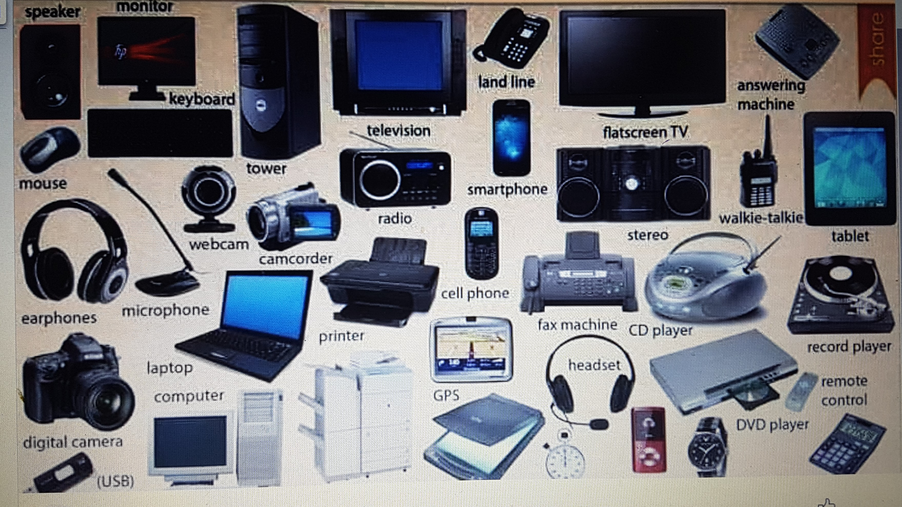

Eagle Connection ltd
F1
Formular One, pupularly known as F1 is one of my favourite sports. I love fast cars and i love seeing talented drivers racing. I having been watching F1 since my young age, i have also played F1 games when i was growing up. I also engage in go karting race with friends. I used to be a great fan of Michael Schumacher, Nicky Lauder, Pablo Montoya, Kimi Reikonen and Janson Buton. I love seeing Sabastine Vettel race but more importantly i have great respect for thr overall F1 chanpion Sir Lewis Hamilton. Sir Hemilton has broken all F1 records and about to break the last recored of getting the eight championship title. This will make him oustanding because the nearest contenter is Michael Schumacker with seven world champions. Lewis has made the sports more attractive to every young kid out there especially the ethnic minorities because he started from a noble background. H ehas given hope to many and provided opportunity for others in the F1 industry. I am happy that one of my son is intersted in F1 and i will do all i can to support him to excel if that is what he intends to do in the future. F1 is so exciting that i wont stop watching and i prioritise it more than other sports on SKY TV. I am a great fan and i even travel to Silverston to #watch the race live, as well as in Germany, Holland and Belgium. I use to be a Ferrarri fan but i folloewd Hamilton from Mclaren to Mercedes AMG. I also like Hamilton team manager Toto Wolf and his current aprtner driver Botas. margin-top: 60px; } #usp li { float: left; width: 23%; padding: 1%; text-align: center; list-style-type: none; } #usp li img { height: 80px; padding: 20px; background-color: cornsilk; border-radius: 50%; } #usp li h2 { font-size: 16px; font-weight: 400; } #usp::after { content: ""; display: block; clear: both; }.
These are my Business Products:
Electronics Device

Electronics
Machinery
Sports Equipments
Entertainment
Home products
Furniture
Beauty and Personal care
.jpg)